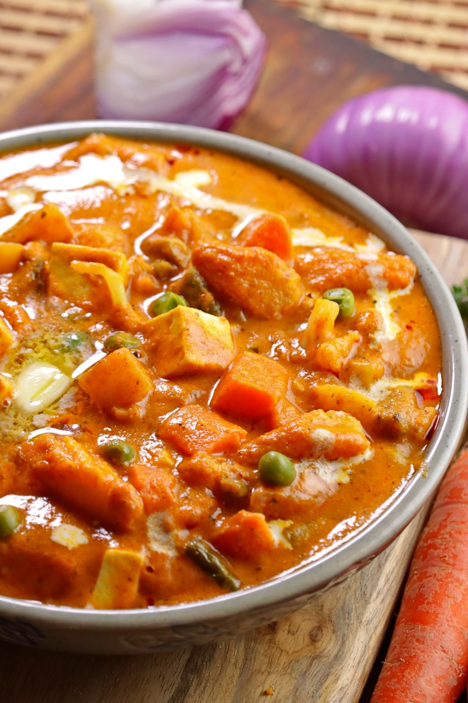

Ingredients

- 1 big onion
- 1 small can tomato puree / 4 medium tomatoes
- 1 big capsicum
- 3/4 cereal bowl corn
- 1/4 cereal bowl peas
- 3-4 cloves garlic
- Ginger
- Red chili powder
- Garam masala
- Paneer or tofu
- 1/4 pack heavy cream
Instructions
- Chop onion and pepper in small pieces.
- Half boil pepper, corn, and peas in salty water, and drain so they become soft and retain color.
- Saute paneer/tofu in ghee and keep aside.
- Now in a nonstick pan take oil and ghee, add ginger, garlic, and onions one by one.
- When they are done, add tomato puree.
- After the oil is separated, add vegetables and also add masala.
- Mix well and cook for 5-7 minutes; then add heavy cream and and cook again for 5-7 minutes.
- Add tofu/paneer when serving; garnish with cilantro.